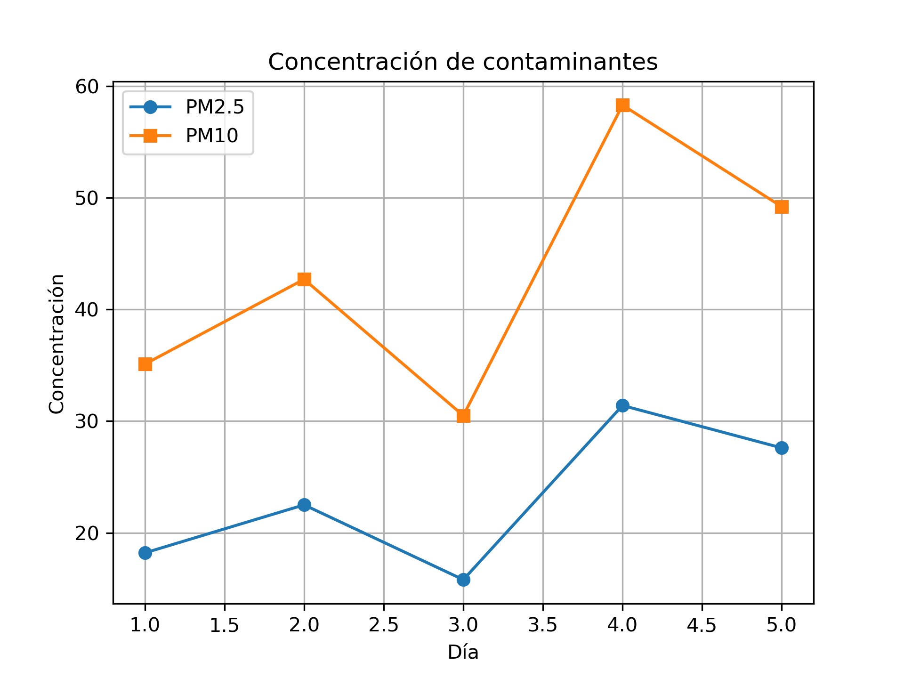

Sobre el proyecto
Este proyecto analiza la calidad del aire en el Área Metropolitana de Monterrey mediante herramientas de programación y análisis de datos.
El proyecto busca facilitar la exploración de información relacionada con los contaminantes atmosféricos y presentar los resultados mediante visualizaciones que permitan interpretar los datos de manera clara.
Objetivo
El objetivo principal es analizar información relacionada con la calidad del aire y utilizar Python para realizar el procesamiento de los datos y generar representaciones gráficas de los resultados.
Datos
Organización y procesamiento de los datos utilizados para el análisis.
Análisis
Procesamiento de información relacionada con los contaminantes atmosféricos.
Visualización
Generación de gráficas para facilitar la interpretación de los resultados.
Metodología
El análisis se desarrolla utilizando Python. El código principal se encuentra en la carpeta src/ del repositorio.
El programa procesa los datos y genera una visualización de los contaminantes analizados. Los resultados se almacenan en la carpeta results/.
- Organización de los datos.
- Procesamiento mediante Python.
- Análisis de contaminantes.
- Generación de visualizaciones.
- Interpretación de los resultados.
Resultados
El proyecto genera una visualización de los contaminantes analizados como resultado del procesamiento de los datos.

La gráfica anterior corresponde al resultado generado por el programa de análisis.
Repositorio
Para consultar el código fuente, los datos, la documentación y los resultados completos del proyecto, visita el repositorio en GitHub.
Ver repositorio en GitHub